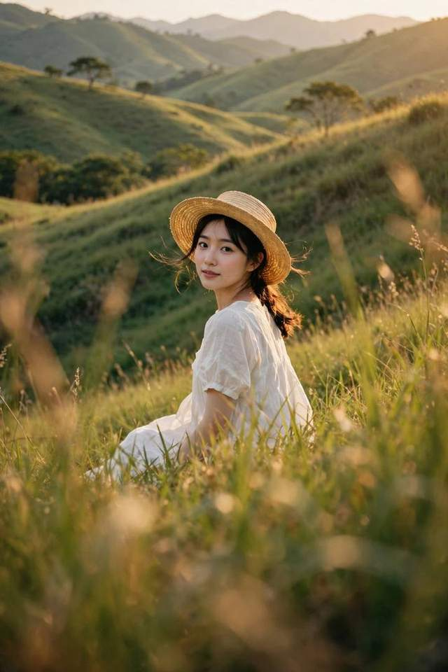
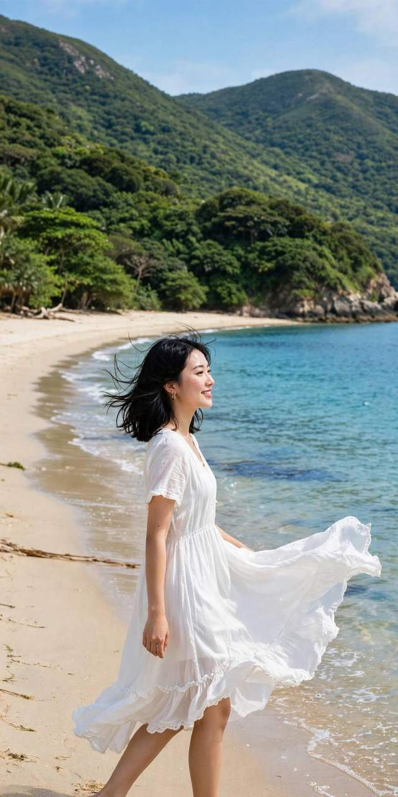
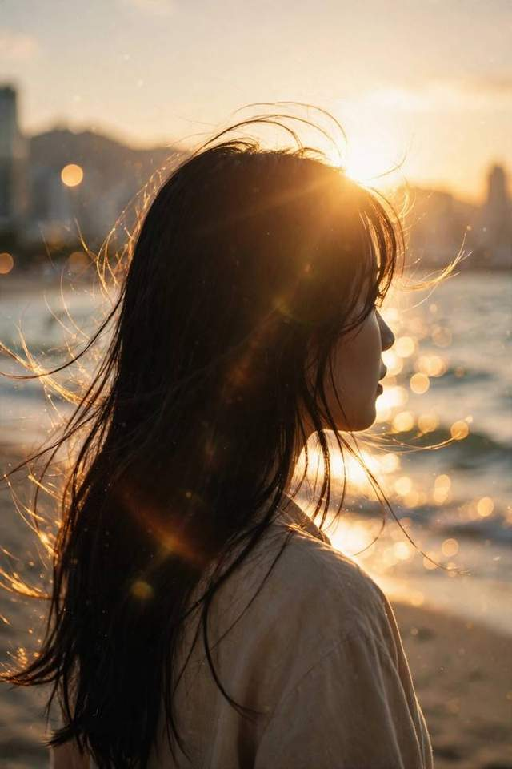

海滩走动 · 二滩浪线
23mm · f/41/1000sAuto ISO
- 站位
- 与她保持约 3m，沿浪线平行移动。太阳在你侧后方，海平线避开脖颈。
- 口令
- 「慢慢走三步，看远处；下一遍回头看我。」动作分两次拍。
- 对焦
- AF‑C + 区域 + 眼检测；短连拍。对焦框跟上后再按快门。
- 色彩
- Astia；日光 WB；DR200 / ISO ≥250；高光 −1、阴影 0、色彩 0。
- 检查
- 放大眼睛与裙摆，白裙不过曝。背景太挤：等空档或换 75mm f/2，别靠开放光圈解决全部问题。

海滩 × 大坑墩绿坡 · 20–24岁女性写真参考
X‑T5 + XF 23mm F1.4 + Viltrox 75mm F1.2
Fujinon XF 23mm F1.4 + Viltrox AF 75mm F1.2。先选场景，再照着「站位 → 口令 → 参数」拍；参数是起点，以现场光线与回放为准。
视角约等效 35mm。全身、海岸、草坡、走动组图用它。站约 2–4m；让脸离画面边缘远一点，镜头保持接近腰胸高度。环境人像从 f/2.8–4 开始。
视角约等效 112.5mm。半身、发丝、干净背景用它。半身站约 4–6m；全身约 8–12m，预留说话空间。先用 f/1.8–2；f/1.2 留给静态、单眼清晰的特写。
23mm：① 场景全身 ② 走动回头 ③ 坐姿环境。75mm：④ 半身眼神 ⑤ 头发 / 手部动作 ⑥ 风吹时自然笑。先完成 6 张，再换衣服或地点。发布时裁 4:5，拍摄保留头顶、脚下与两侧空间。
这些是清水湾现场起始设置，不是摄影师原作的 EXIF 或官方胶片配方。
女性模特 / 演员的 20–24 岁阶段，选海边、草地与树下的具体画面。先看 2026 新作，再看历年仍适合这次拍摄的作品。点图放大；拍法是这套器材的现场建议。
显示 6 本写真集
摄影：須江隆治 Ryūji Sue · 22 岁阶段 · 新潮社 · 2026‑04‑14
摄影 © 須江隆治 / 新潮社。公开先行图与地点说明 ↗
为什么看这本：尼斯海边的开阔色彩和玩水时自然笑；2026 上半年 Oricon 写真集类别第1，报道期间销量约9.2万部。官方 X 关注与浏览数字见「2026趋势」来源。
二滩怎么拍：低一点的机位，海平线避开脸。「用脚碰碰浪，等浪退了看我」；白裙也能拍这个表情。
摄影：三宮幹史 Motofumi Sannomiya · 发行时24岁 · DONUTS / 主婦の友社 · 2026‑06‑30
摄影 © 三宮幹史 / DONUTS / 主婦の友社；保留原图水印。写真集公开图 ↗
为什么看这本：在克罗地亚 Dubrovnik 拍摄，海岸、蓝天和自然表情很适合清水湾。本人在2026采访里强调「素の表情」；官方有 YouTube 直播推广，未把活动本身写成全平台排名。
一滩怎么拍：找干燥、平坦的海岸，全身保留足下空间。「伸个懒腰，身体向一边倾，再放下手笑」；连拍动作之间的放松瞬间。
摄影：菊地泰久 Yasuhisa Kikuchi · 20 岁阶段 · 新潮社 · 2022‑06‑07
摄影 © 菊地泰久 / 新潮社。海边与田野公开图 ↗
为什么看这本：海边白裙、风、回头都与这次外拍接近。出处明确写出宫古岛与那覇前浜，以及甘蔗田跳跃画面。2022年官方 Twitter 被报道超过16万关注；这是历年参考，非2026新书。
海滩怎么拍：让她侧对光、慢慢回头；23mm 留海岸和裙摆，75mm 收表情。金色来自现场斜阳，清水湾上午不会有同样的夕阳效果。
大坑墩怎么拍：在平整草地轻跳一次，摄影者固定机位；23mm f/4 · 1/1600s，约3m，AF‑C短连拍。别在坡边跳，原图道路不需要照搬。
看发行期社媒报道 ↗摄影：須江隆治 Ryūji Sue（See） · 春季拍摄时 21 岁 · 集英社 · 2023‑10‑03
摄影 © 須江隆治（See）/ 集英社。公开图、冲绳与名古屋拍摄说明 ↗
为什么看这本：同一本书里就能参考海边白裙与自然光树下人像；2026《エチュード》采访也确认两书由同一摄影师拍摄。
二滩怎么拍：让模特身体略侧、手轻碰肩带 / 袖口；不要耸肩。用较简洁的蓝绿海面做背景，人物占画面约一半。
大坑墩怎么拍：借鉴枝叶框景和柔光，原图是春季樱花，10月大坑墩用绿树。75mm f/2 · 1/500s；前景不遮眼，脸朝亮天空。
看2026采访确认同一摄影师 ↗摄影：細居幸次郎 Kōjirō Hosoi · 20–21 岁拍摄阶段 · 集英社 · 2023‑07‑11
摄影 © 細居幸次郎 / 集英社。灯塔草地、动作与拍摄阶段说明 ↗
为什么看这本：以东北的海、岛、湖和四季为背景。草地这一张让人物、颜色与小动作一起讲故事；报道明确称它是从20岁开始、历时一年多的纪录。
大坑墩怎么拍：红裙 / 彩色上衣配绿坡，拿草帽做轻动作；把灯塔换成大树。人与背景留距离，留出一些天空。
写真集主摄：川島小鳥 Kotori Kawashima · 2016发行时22岁 · 集英社 · 2016‑09‑27
展示图：写真集官方 Instagram 公开花絮，图中拍摄者未署名；川島小鳥为写真集主摄。原公开花絮与海边说明 ↗
为什么看这本：马耳他 / 意大利的全胶片旅行写真，与「海边、白裙、20多岁女演员」的需求相近。发行时有官方 Instagram 相册与互动报道；选它作为历年风格参考，不声称这本在2026重新登榜。
一滩怎么拍：安全干燥处坐下，海天留白，人物放下半部。「看海，手放膝盖，再慢慢回头」；不用照搬礁石边缘位置。
本页展示8张已核对的公开图，来自6本写真集；没有转载整本相册。年龄按报道的拍摄阶段或明确标注的发行阶段；来源未提供每张图的具体拍摄日期。
研究更新：2026‑10‑01。参考 Instagram 文化报道、写真集官方 X / YouTube 活动与 Pinterest 趋势报告，再转成海滩和郊野人像的拍法。
下列「已观察」有 2026 年报道；「年度预测」来自 Pinterest 的 2026 报告。写真集按实际年份标注。小红书检索词只是找灵感的入口，没有把它们写成平台热度排名。
Vogue 1月13日报道「2026 is the new 2016」：用户以带早期 Instagram 滤镜的 photo dump 回看 2016，偏向轻松、少修饰的记忆感。
现场做法：23mm 拍完整场景，走动、回头、拨头发；75mm 补一张表情。每组留 6 张，颜色保持一致。不用故意把眼睛拍糊或烧白皮肤。
找灵感：2016 summer photo dump / 胶片旅行人像 / 海边生活感
Vogue · 2026‑01‑13 ↗川崎桜《エチュード》的官方 X 获报道超过 13万关注、先行图累计 4000万浏览；本人强调近距离和同行感。金川紗耶的 2026 写真集也以自然表情、旅行感和 YouTube 直播推广。
现场做法：先做一个小动作，再拍她反应。「走到这里，再看我」比固定笑容更自然。23mm 拍同行视角；75mm 在不打扰她的距离抓表情。
找灵感：エチュード 川﨑桜 / 好きのグラデーション 金川紗耶 / 海边写真
Modelpress · 2026‑05‑26（数字为报道当时）↗ 金川紗耶 · 2026‑06‑27 社媒活动 ↗Pinterest 报告中的自然、林间、动物元素方向；相关检索 deer aesthetic +55%。适合用柔和草木色、少量配饰与树荫组织人像。
大坑墩做法：米白 / 浅棕衣服，树与绿坡做背景；75mm f/2 从草边低一点拍，保留一层虚化前景。把「森林感」落实到光线和环境，不靠把皮肤染绿。
Pinterest Predicts 2026 · Wilderkind ↗报告的冰蓝色方向；相关检索 icy blue +50%。蓝色用于背景和衣服，脸保持自然。
二滩做法：白色 / 浅蓝衣服配海天，23mm f/4 做全身。用 Astia，先固定日光 WB；想偏冷只轻调画面，别把肤色一起推蓝。
Pinterest Predicts 2026 · Cool Blue ↗报告关注蕾丝与钩织细节；相关检索 lace bandana +150%。小面积质感就能把普通白裙拍得更有层次。
海滩 / 草坡做法：用 75mm f/2 拍袖口、侧脸与手部动作；23mm 补一张有裙摆的环境照。高光优先保住织物纹理。
Pinterest Predicts 2026 · Laced Up ↗Pinterest 的百分比是报告使用的全球英文检索增长：2024‑09 至 2025‑08 对比此前一年，用于 2026 预测；不是 2026 实时人像排名，也不是小红书数据。
周六 + 黄金周，预留人流和交通时间。上午海滩、下午绿坡；现场按云量、光线和人流调整。
三个拍摄点的取景与到达提示。交通、开放设施和泳滩情况以出发当日公告为准。
两滩之间有岩石岬角 + 约15分钟步道相连，约100级台阶，轻装上阵。
按海滩与草坡场景制作的构图示意，不是实地照片。看站位、受光和动作；现场背景以实际情况为准。点图放大给模特看。
下午太阳压低时，让模特站在安全平整的草坡，背对/侧对太阳。风会替你做造型——等一阵风来再按快门。

草坡人像机位：你蹲到草里仰拍，前景的草虚化成天然画框。模特戴草帽、回头——新手最不尴尬的pose。

换上23mm，人只占画面一小块——"地方感"拉满。这种图和特写拼在一起，组图才有呼吸感。

一滩礁石区的标准答案：白裙坐礁石上，不看镜头。阴天来拍反而更好——云是天然柔光箱，岩石质感更沉。

二滩招牌：细沙 + 绿山 + 白裙。让模特沿着浪线走，你横向跟拍连拍——走起来的裙摆比任何摆拍都自然。

把太阳藏在模特脑后，发丝会透出光边。先找能照亮脸的天空反光，再等风吹起头发；脸与轮廓都保留细节。
👆 点任意图片可全屏放大，直接举给模特看
用下方已核对的写真集公开图做口令卡；相机参数为本次外拍建议。先做动作再看镜头，每次只给一个口令。

版权与出处见「写真参考」；动作口令可以换成她更舒服的做法。
「AI概念图」为海滩与草坡的虚构构图示意，不是实地记录。「动作」使用本页已核对的写真集公开图，完整出处见「写真参考」。「写真参考」选用出版方 / 官方相册已公开的宣传图片，逐图标注来源与摄影署名；其中西野七瀬一图为官方花絮，未署单图拍摄者。图片版权归原摄影师与权利方所有。地点链接供行前查阅；交通、设施、水质和光线以当天公告与现场情况为准。
X‑T5 官方手册：动态范围与ISO门槛 · 脸部 / 眼睛检测 · 测光
研究日期：2026‑10‑01。构图、距离、快门、胶片模拟是本指南的实拍起点，不是原摄影师的EXIF。完整研究来源与筛选记录